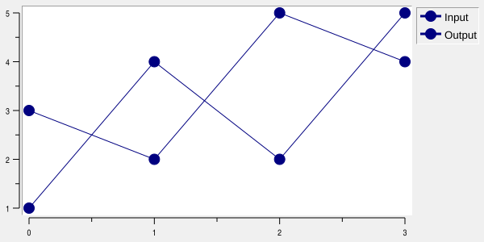
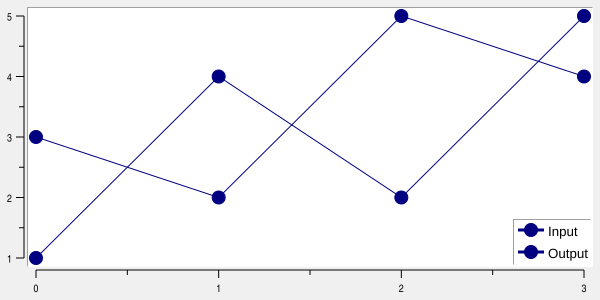
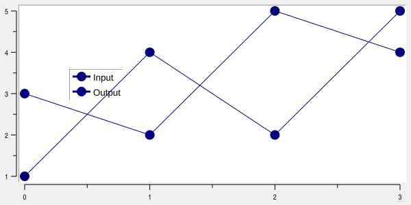
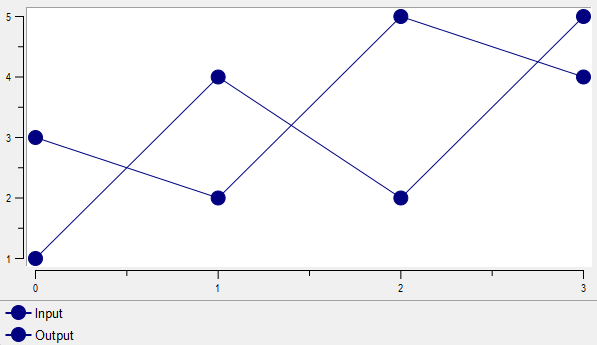
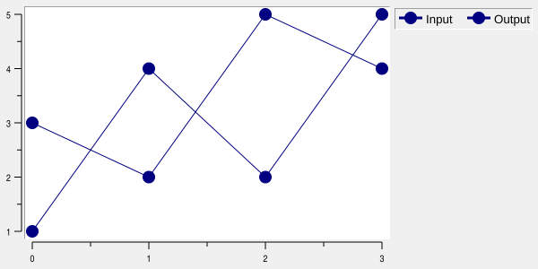

Graph legend LEGEND command
Commands in this namespace document the graph legend.
LEGEND is used below as a placeholder for:
GRAPHINST legend
The legend displays an entry for graph elements. Each entry contains the element’s symbol and label and uses the drawing attributes of that element.
For example:
graph .g
.g element create signal1 -x {0 1 2 3} -y {1 4 2 5} -label "Input"
.g element create signal2 -x {0 1 2 3} -y {3 2 5 4} -label "Output"
.g legend configure -position rightmargin -font {TimesNewRoman 10}

Each graph has one global legend. A ::rbc::TRACKGRAPH widget also has an optional local legend for each named track; see Track-local legends below.
With -renderer cairo, legend line samples, geometric and bitmap symbols, and bar swatches use Cairo. They
follow -antialias and the normal element pen, including dash colors and stipples. Swatch stipples restart at
the sample origin. Text, backgrounds, and relief borders remain native. The same behavior applies to external
legend windows.
Track-local legends
Each ::rbc::TRACKGRAPH track (row or inverted column) owns a legend addressed through TRACKGRAPH legend
trackName. It accepts the same configure, cget, get, activate, deactivate, and bind operations as
the global legend:
.g legend configure -hide yes
.g track legend voltage configure -hide no -position right -anchor ne -background white
.g track legend current configure -hide no -position top -anchor nw -rows 1
.g track legend voltage bind all <ButtonPress-1> {
puts [.g track legend voltage get current]
}
Local legends default to -hide yes, -position plotarea, -anchor ne, and -raised yes. They use the
same font, color, symbol, padding, border and row/column options as the global legend. Their option-database
component is trackLegend, class TrackLegend. Configure each track legend separately for different styles.
A local legend contains only its track’s displayed elements with nonempty labels, in element display order.
-hideplot yes retains an entry so an active legend can show that element again. Moving an element to
another track moves its entry; deleting the element or clearing its label removes the entry. Empty legends
occupy no space. Reordering or resizing tracks carries each legend along without replacing its bindings.
Local -position accepts plotarea, left, right, top, or bottom, all inside the track. With
plotarea, -anchor positions the legend within the entire row. The other positions pin it to the named
edge; -anchor chooses its position along that edge. Margin positions, @x,y, and external windows are
not supported for local legends. The global legend retains all its existing positions and external-window
behavior. Local legends overlay the plot and do not reserve margins or change shared X alignment.
Drawing and picking are clipped to the owning row, including when labels are too large to fit. Native and
Cairo drawing, and SVG/PDF/PostScript output, use the same membership and layout. -raised selects drawing
above or below elements, as for a global plot legend. If global and local legends overlap, the raised one
receives legend events; at equal -raised values the global legend takes precedence.
TRACKGRAPH legend trackName bbox returns the visible, clipped rectangle as x y width height in
graph-window pixels, or an empty list when nothing is visible. Unlike track bbox, the last two values are
dimensions, not opposite corners. get @x,y uses the same graph-window coordinates and never selects an
entry outside the row. get current refers only to the entry currently picked in that particular legend.
Local legend operations accept unambiguous abbreviations, including bb or bbo for bbox.
b is ambiguous between bbox and bind; use bi or bind for bindings. bbox accepts no
additional arguments. It is available only on local legends, not the global legend.
Local binding tables are scoped: binding all, an element name, its class, or one of its tags in one local
legend does not install that binding in another legend. Local activate/deactivate patterns select only
that track’s elements. Label activation and element -labelrelief are shared element state, so a label’s
appearance is consistent when the element is present in both a local and the global legend.
Global and local legends can coexist; neither is hidden automatically. Deleting an empty track destroys
its local legend and bindings. graphtoolbar -type trackgraph -activelegend supplies its normal state cycle
for local legends, including tracks created later, and does not start box zoom or pan over their rectangles.
See demos/trackgraph2.tcl for a working example.
Legend entries
Legend entries correspond to graph elements. The element’s -label option supplies the text displayed in the
legend.
The order of legend entries follows the element display order.
Legend entries may be made active independently of the corresponding graph elements:
.g legend activate signal1
.g legend deactivate signal1
Activating a legend entry changes only the appearance of the entry in the legend. It does not activate the corresponding data points or change how the element is drawn in the plotting area.
To activate both independently:
.g legend activate signal1
.g element activate signal1
Legend position
The -position option determines where the legend is displayed.
Position |
Description |
|---|---|
|
Draws the legend in the left graph margin. |
|
Draws the legend in the right graph margin. This is the default. |
|
Draws the legend in the top graph margin. |
|
Draws the legend in the bottom graph margin. |
|
Draws the legend inside the plotting area. |
|
Places the legend at the specified screen coordinates. |
|
Creates an external legend window with the specified Tk pathname. |
For example:
.g legend configure -position plotarea -anchor se

places the legend in the lower-right part of the plotting area.
An explicit screen position may also be used:
.g legend configure -position @100,100 -anchor se

For an @x,y position, negative coordinates are measured from the opposite edge of the graph. For example, a
negative X coordinate is relative to the right edge and a negative Y coordinate is relative to the bottom edge.
A pathname beginning with . selects an external legend window:
.g legend configure -position .legend
grid .g -row 0 -column 0 -sticky news
grid .legend -row 1 -column 0 -sticky news

RBC creates the window at that pathname and draws the legend into it. If the external legend window is
destroyed, the legend returns to rightmargin.
The -anchor option controls how the legend is positioned relative to its selected site or screen coordinate.
Legend layout
Legend entries are arranged as a table.
-rows and -columns can be used to request a particular table shape:
.g legend configure -columns 2

A value of 0 leaves that dimension automatic.
When the legend has a single row, each entry uses its own label width, plus space for its symbol, borders and
internal padding. For example, -rows 1 produces a compact horizontal legend. Multi-row legends retain
equal-width cells based on the widest label. Automatic layout in the top and bottom margins uses one row when
the combined individual entry widths fit the available width.
-ipadx and -ipady specify padding inside individual legend entries. -padx and -pady specify padding
around the outside of the complete legend.
Each padding value may contain either one screen distance or two:
.g legend configure -ipadx {2 6} -pady {4 8}
A single value applies equally to both sides. Two values specify the two sides independently.
Active entries
LEGEND activate marks entries for drawing with the active legend style and returns the names of all entries
that are currently active.
The active appearance is controlled by:
-activebackground-activeborderwidth-activeforeground-activerelief
For example:
.g legend configure -activebackground lightblue -activeforeground navy -activerelief raised
.g legend activate signal1
LEGEND deactivate restores the normal legend appearance.
Legend bindings
Event bindings may be associated with legend entries using LEGEND bind.
Element names act as binding tags for their corresponding legend entries:
.g legend bind signal1 <Button-1> {
puts "signal1"
}
The element under the current pointer may be obtained with LEGEND get and used by a binding:
.g legend bind all <Button-1> {
set element [.g legend get current]
puts $element
}
LEGEND get can also identify the entry at an explicit screen position.
Legend options
Option |
Database name |
Database class |
Default |
Description |
|---|---|---|---|---|
|
|
|
|
Sets the background color used for active legend entries. |
|
|
|
|
Sets the width of the 3-D border around active legend entries. |
|
|
|
|
Sets the foreground color used for active legend entries. |
|
|
|
|
Sets the relief used for active legend entries. |
|
|
|
|
Specifies how the legend is positioned relative to the location selected by |
|
|
|
Empty |
Sets the legend background color. An empty value makes the legend background transparent. |
|
— |
— |
Empty |
Synonym for |
|
|
|
|
Sets the width of the 3-D border around the legend. |
|
— |
— |
|
Synonym for |
|
|
|
|
Specifies the requested number of columns used to arrange legend entries. |
|
|
|
|
Sets the font used for legend labels. |
|
|
|
|
Sets the foreground color used for legend labels. |
|
— |
— |
|
Synonym for |
|
|
|
|
Controls whether the legend is displayed. |
|
|
|
|
Sets horizontal padding inside each legend entry. |
|
|
|
|
Sets vertical padding inside each legend entry. |
|
|
|
|
Sets horizontal padding around the exterior of the legend. |
|
|
|
|
Sets vertical padding around the exterior of the legend. |
|
|
|
|
Specifies where the legend is displayed. The value may select a graph margin, |
|
|
|
|
Controls whether a legend placed in the plotting area is drawn above graph elements. |
|
|
|
|
Sets the relief used for the legend border. |
|
|
|
|
Specifies the requested number of rows used to arrange legend entries. |
|
|
|
Empty |
Specifies a shadow for legend labels. An empty value disables the shadow. |
Legend configuration options may also be set through Tk’s option database. The resource name is legend and
the resource class is Legend.
For example:
option add *Graph.legend.Foreground navy
option add *Graph.Legend.Relief raised
Copyright (c) George Yashin